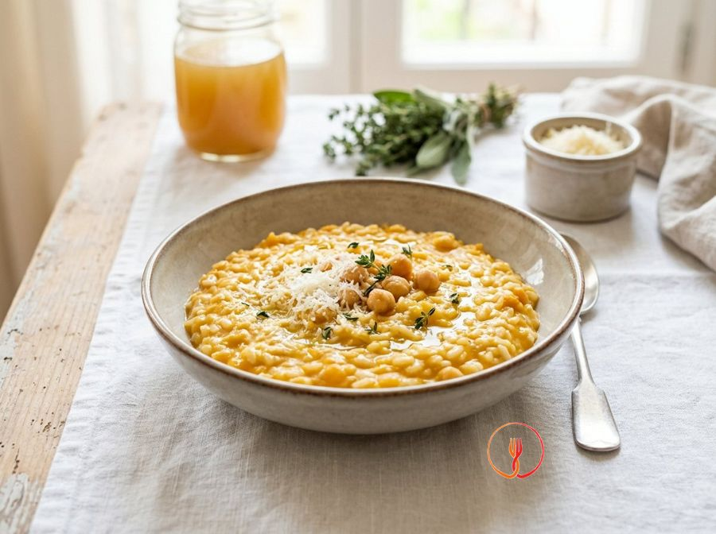

Baby Originario Risotto with Pumpkin Cream and Skinned Chickpeas
A delicate and naturally sweet risotto thanks to the pumpkin, enriched with chickpeas that are blended to remove the skins, making them perfect for young children's digestion. A nutritious and balanced single dish.
Ingredients
- Originario or Maratelli rice (short-grain Italian rice varieties)160 g
- Pumpkin (already cleaned)250 g
- Pre-cooked chickpeas (well rinsed)120 g
- Homemade vegetable stock (salt-free)600 ml
- Extra virgin olive oil15 ml
- Grated Parmigiano Reggiano15 g
Allergens
Milk
Method
- Cut the pumpkin into very small cubes of about 1 cm to allow for quick and even cooking directly in the rice.
- Pass the pre-cooked chickpeas through a food mill with a fine disc to remove the tough skins, obtaining a smooth and digestible cream.
- In a saucepan, heat a tablespoon of water and add the pumpkin, sweating it for 5 minutes until it becomes tender.
- Add the rice to the pumpkin and let it toast lightly for a minute, stirring often so it doesn't stick, without using fats at the start.
- Start adding the hot vegetable stock one ladle at a time, waiting for it to be absorbed before adding more.
- Halfway through cooking (after about 8-10 minutes), incorporate the previously prepared chickpea cream, stirring well to blend the flavours.
- Continue cooking until the rice is well cooked and creamy; for children aged 1-3, a slightly softer cook than 'al dente' is preferable.
- Turn off the heat, add the extra virgin olive oil and Parmigiano, stirring vigorously (mantecatura) to obtain a velvety consistency.
- Serve warm on flat plates, spreading the rice out well to let it cool down evenly.
Nutrition facts (estimate)
| Per serving (290 g) | Per 100 g | |
|---|---|---|
| Energy | 1192 kJ / 285.0 kcal | 411.0 kJ / 98.3 kcal |
| Protein | 8.0 g | 2.8 g |
| Carbohydrates | 48.0 g | 16.6 g |
| of which sugars | – g | – g |
| Fat | 7.0 g | 2.4 g |
| of which saturates | – g | – g |
| Fibre | – g | – g |
| Salt | – g | – g |
AI estimates based on average CREA / USDA data: indicative only, not a substitute for medical or dietitian advice.
Open the recipe in the app for the shopping list, ingredient sheets and nearby shops.